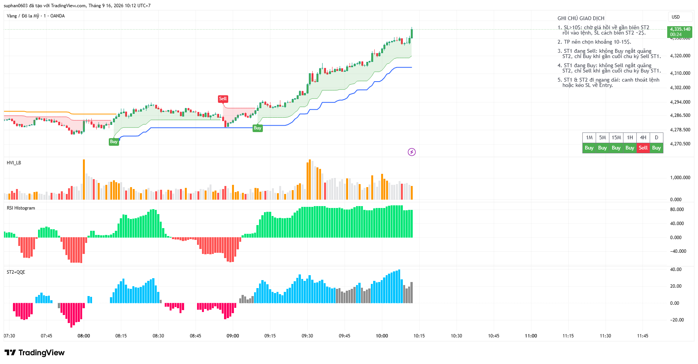
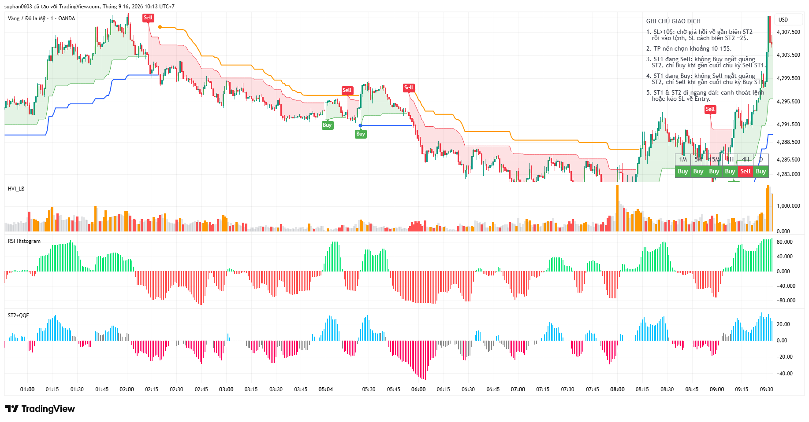
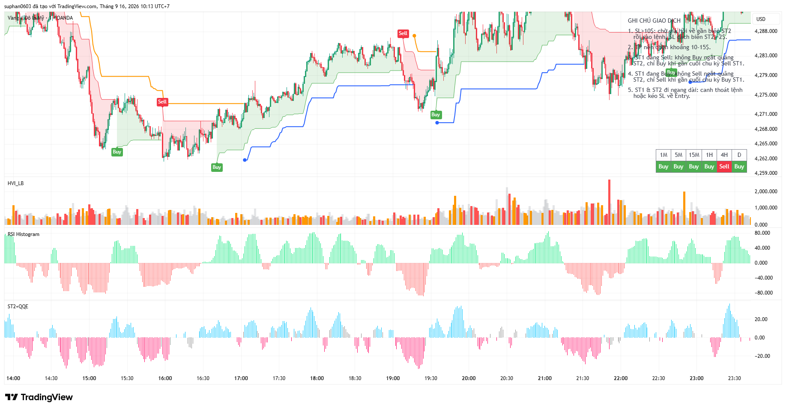
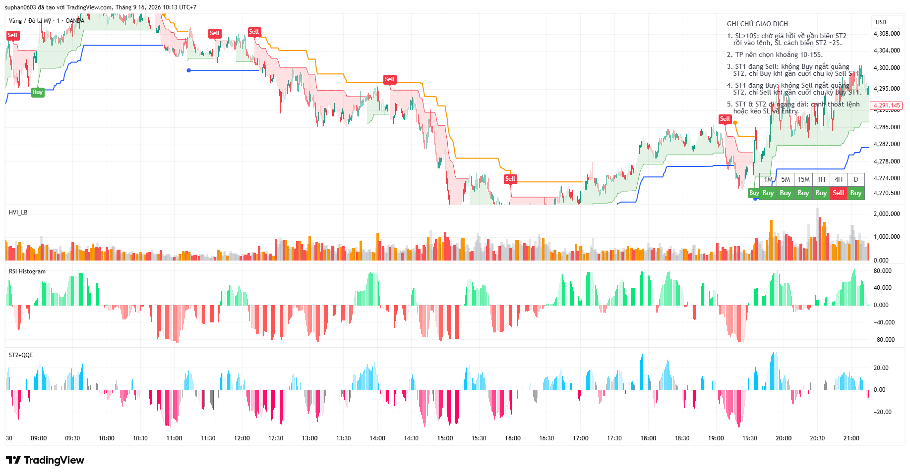
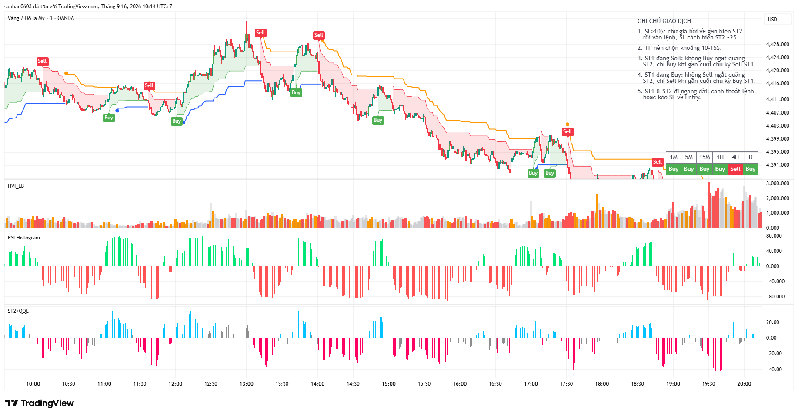
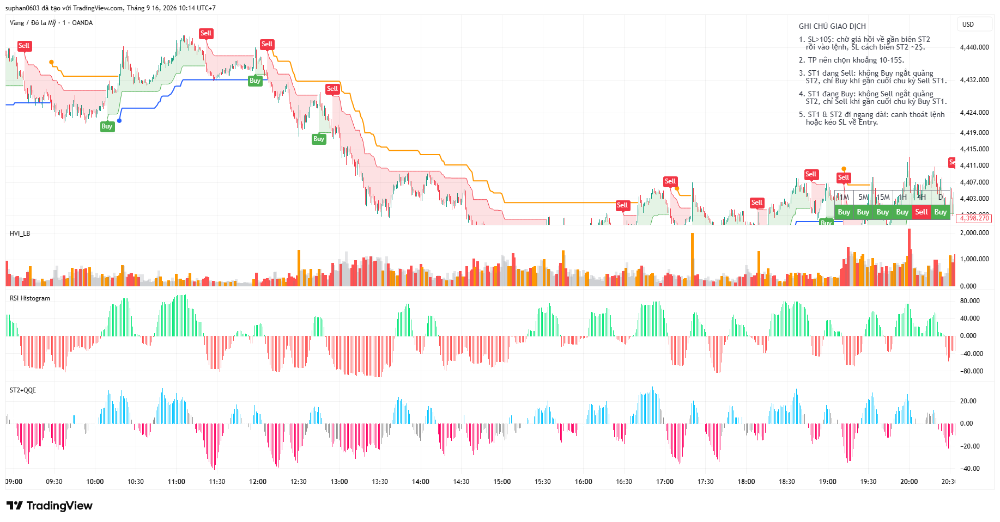
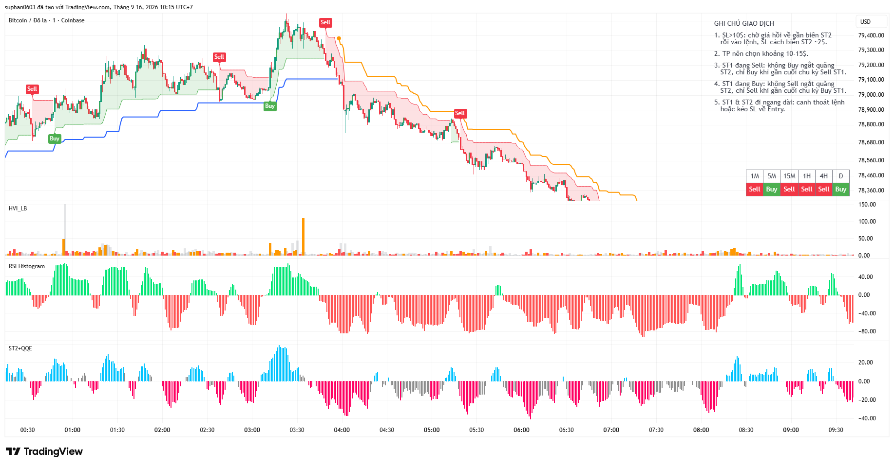
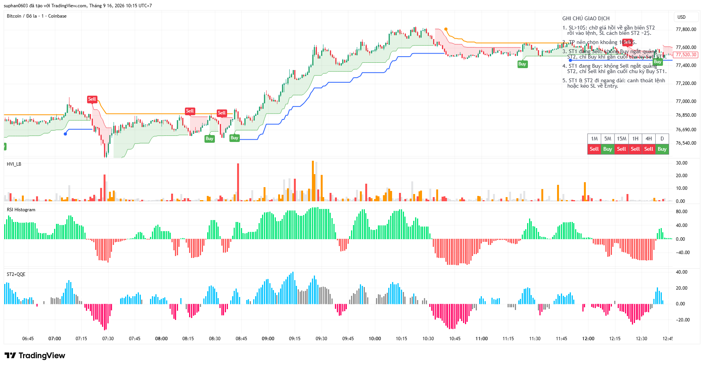

Chiến lược Supertrend cải tiến
v1.6 · ST1 + ST2 + QQE MOD + RSI HISTOGRAM + HVI_LB
Bộ quy tắc giao dịch dựa trên chỉ báo xSupertrend_ST2QQE_HVI_v1.6: 2 đường Supertrend (1 chậm xác định xu hướng chính, 1 nhanh làm điểm vào lệnh) được lọc qua 2 lớp xác nhận nối tiếp — QQE MOD + HVI_LB, rồi đến RSI Histogram — trước khi nhãn Buy/Sell thật sự xuất hiện trên chart.
01
Cài đặt chỉ báo
Chỉ báo thật (xSupertrend_ST2QQE_HVI_v1.6) gồm 5 lớp chạy nối tiếp nhau — không phải 3 chỉ báo song song. ST1 cho bối cảnh xu hướng, ST2 phát tín hiệu thô, rồi tín hiệu thô đó phải "sống sót" qua 2 lớp lọc trước khi được vẽ thành nhãn Buy/Sell.
| Lớp | Vai trò | Cài đặt mặc định |
|---|---|---|
| ST1 (Supertrend chậm) | Xu hướng chính / bối cảnh — đường xanh dương (tăng) hoặc cam (giảm) trên nến | ATR Period 10, Mult 6 |
| ST2 (Supertrend nhanh) | Nguồn phát tín hiệu Buy/Sell thô — vùng tô xanh lá/đỏ quanh nến | ATR Period 10, Mult 4 |
| Lọc 1 — QQE MOD | Xác nhận động lượng. Pane "ST2+QQE": cột xanh dương/hồng = đạt ngưỡng, cột xám = trung tính | Phải cùng chiều với ST2 trong tối đa 3 nến kể từ nến tín hiệu, kèm HVI_LB cùng màu |
| Lọc 1 — HVI_LB | Xác nhận khối lượng thật (không phải tăng/giảm ảo). Pane "HVI_LB" | Length 200, Divisor 1.5 |
| Lọc 2 — RSI Histogram | Xác nhận cuối, dùng RSI làm mượt KAMA. Pane "RSI Histogram": cột xanh = giữ Buy, đỏ = giữ Sell | Chỉ hợp lệ nếu cột vừa đổi màu trong ≤5 nến gần nhất, và xác nhận trong tối đa 3 nến |
Nói cách khác: ST2 báo trước, QQE MOD + HVI_LB gật đầu lần 1, RSI Histogram gật đầu lần 2 — mất một trong hai cái gật đầu, tín hiệu bị huỷ và không có nhãn Buy/Sell nào xuất hiện trên chart cả. Vì vậy mọi nhãn Buy/Sell nhìn thấy trên chart trong tài liệu này đều đã qua đủ 2 lớp lọc — nhưng "qua được bộ lọc" không đồng nghĩa "chắc thắng", xem mục 02–05 và mục Ảnh thực tế bên dưới.
02
Quy tắc vào lệnh MUA
LONGKhông cần tự đếm điều kiện — nhãn Buy chỉ hiện trên chart khi chỉ báo đã tự xác nhận đủ cả 2 lớp lọc. Việc của người vào lệnh là đọc bối cảnh ST1 trước khi bấm lệnh, theo đúng thứ tự:
- 1ST2 đảo chiều sang tăng — vùng tô quanh nến chuyển xanh lá, đây là tín hiệu thô.
- 2QQE MOD + HVI_LB cùng xác nhận trong ≤3 nến — pane "ST2+QQE" ra cột xanh dương/hồng đạt ngưỡng, đồng thời pane "HVI_LB" ra cột xanh.
- 3RSI Histogram xác nhận thêm, còn "tươi" (≤5 nến kể từ khi đổi màu) — nếu qua được cả 2 lớp, nhãn Buy mới xuất hiện.
- ✓Kiểm tra bối cảnh ST1 trước khi vào: ưu tiên nhất là Buy xuất hiện khi ST1 đã đang ở trạng thái tăng, hoặc khi ST1 đang giảm nhưng gần cuối chu kỳ (giá đang lình xình sát đường ST1, chuẩn bị đổi màu) — xem quy tắc pacing ở mục 02b.

Vàng (XAU/USD), khung 1 phút — cả 3 điều kiện khớp đúng tại cùng 1 cây nến: Supertrend chuyển xanh (1), ST2+RSI chuyển xanh (2), HVI_LB có cột xanh cao vọt xác nhận (3).

Phiên giao dịch khác — cùng bộ 3 điều kiện lặp lại chính xác, cho thấy tính nhất quán của quy tắc.
03
Quy tắc vào lệnh BÁN
SHORTNgược lại hoàn toàn với lệnh mua, cùng cơ chế 2 lớp lọc:
- 1ST2 đảo chiều sang giảm — vùng tô quanh nến chuyển đỏ, tín hiệu thô.
- 2QQE MOD + HVI_LB cùng xác nhận trong ≤3 nến — pane "ST2+QQE" ra cột hồng đạt ngưỡng âm, pane "HVI_LB" ra cột đỏ.
- 3RSI Histogram xác nhận thêm, còn "tươi" (≤5 nến) — qua hết mới hiện nhãn Sell.
- ✓Kiểm tra bối cảnh ST1: ưu tiên Sell khi ST1 đã giảm, hoặc khi ST1 đang tăng nhưng gần cuối chu kỳ. Sell xuất hiện giữa một chu kỳ ST1 tăng còn mạnh — như ảnh minh hoạ ở mục Ảnh thực tế — thường là tín hiệu yếu, dễ bị quét ngược trở lại.

Vàng (XAU/USD), khung 1 phút — cả 3 điều kiện khớp đúng tại cùng 1 cây nến: Supertrend chuyển đỏ (1), ST2+RSI chuyển đỏ (2), HVI_LB nghiêng đỏ xác nhận (3).
02b
Quy trình 3 bước VÀO · GIỮ · THOÁT
Đây là phần quan trọng nhất — chỉ báo chỉ cho điểm vào, còn giữ lệnh bao lâu và thoát khi nào là phần con người phải tự quyết theo bối cảnh ST1. Toàn bộ nội dung dưới đây lấy trực tiếp từ bảng ghi chú gắn sẵn trong chỉ báo (5 dòng "GHI CHÚ GIAO DỊCH" ở góc chart).
Bước 1 — Vào lệnh
- 1Chỉ vào khi nhãn Buy/Sell đã hiện trên chart (đã qua đủ 2 lớp lọc, xem mục 01). Không tự vào lệnh sớm khi mới thấy ST2 đổi màu mà QQE MOD/HVI_LB/RSI Histogram chưa xác nhận — đó vẫn là tín hiệu thô, có thể bị huỷ trong vài nến tới.
- 2Nếu khoảng cách từ giá hiện tại đến biên ST2 > 10$ (SL sẽ quá xa), không vào ngay — chờ giá hồi về gần biên ST2 rồi mới vào, đặt SL cách biên ST2 khoảng ~2$.
Bước 2 — Giữ lệnh (pacing theo ST1)
- 3ST1 đang Sell (đường cam trên nến): không mở Buy mới mỗi lần ST2 chỉ nảy lên ngắt quãng giữa chu kỳ giảm — đó thường là hồi kỹ thuật trong downtrend. Chỉ Buy khi ST2 đổi màu xanh gần cuối chu kỳ Sell của ST1 (giá bắt đầu lình xình sát đường ST1, chuẩn bị cắt lên).
- 4ST1 đang Buy (đường xanh dương dưới nến): ngược lại, không mở Sell mới mỗi lần ST2 chỉ ngắt quãng giữa chu kỳ tăng. Chỉ Sell khi ST2 đổi màu đỏ gần cuối chu kỳ Buy của ST1.
Bước 3 — Thoát lệnh
- 5Take profit nên chọn trong khoảng 10–15$ tính từ giá vào lệnh — không cố gồng thêm khi đã đạt vùng này trừ khi ST1 vẫn còn cách xa, chưa có dấu hiệu tạo đỉnh/đáy mới.
- 6ST1 & ST2 đi ngang dài (không mở rộng biên, nến nhỏ liên tục): đây là tín hiệu thoát chủ động — hoặc đóng lệnh non-tay, hoặc kéo SL về đúng giá Entry để bảo toàn vốn, không chờ chạm SL/TP mới xử lý.
04
Quản lý vốn
| Stop loss | Cách biên ST2 khoảng ~2$. Nếu khoảng cách entry → biên ST2 vượt quá 10$, không vào ngay mà chờ giá hồi về gần biên ST2 rồi mới đặt lệnh, để SL không bị quá rộng. |
| Take profit | Cố định trong khoảng 10–15$ tính từ entry — không dùng tỷ lệ R:R cố định, vì SL luôn được ràng theo cấu trúc ST2 chứ không theo % vốn. |
| Pacing theo ST1 | Xem Bước 2 ở mục Vào·Giữ·Thoát — đây là phần quản lý vốn "mềm" quan trọng nhất, giúp tránh vào lệnh ngược dòng ở giữa một xu hướng ST1 còn mạnh. |
| Thoát sớm khi đi ngang | ST1 & ST2 đi ngang dài → canh thoát lệnh hoặc kéo SL về Entry, không đợi lệnh tự chạm SL/TP. |
05
Những trường hợp không vào lệnh

Trường hợp không nên vào lệnh — ST2+RSI đổi màu trễ 3 nến sau điểm Supertrend xác nhận, HVI_LB không có cột xác nhận đúng lúc. Tín hiệu nên bỏ qua, không chờ đợi để vào trễ.
05b
Ảnh thực tế bổ sung — 8 phiên phân tích
8 ảnh chụp trực tiếp từ chart thật (TradingView), chưa qua dựng lại, dùng để soi chiếu quy tắc Vào · Giữ · Thoát ở mục 02b. Nhãn Buy/Sell trong các ảnh này đều là tín hiệu đã qua đủ 2 lớp lọc của chỉ báo (mục 01) — nhưng "qua được bộ lọc" không có nghĩa mọi lệnh đều đáng vào ngay; đánh giá thêm dựa trên bối cảnh ST1 và diễn biến giá sau đó.

Ca 1 CHUẨN
XAU/USD · 1 phút · OANDA
- Vào lệnh
- Có 1 lệnh Sell nảy lên giữa vùng lình xình rồi bị đảo chiều gần như ngay lập tức — ví dụ điển hình của tín hiệu "trẻ", nên bỏ qua theo quy tắc ST1-pacing. Ngay sau đó là lệnh Buy thứ hai, rơi đúng vào lúc giá vừa thoát khỏi vùng đi ngang và ST1 chuẩn bị cắt lên — đây là điểm vào chuẩn.
- Giữ lệnh
- Sau lệnh Buy chuẩn, cả 3 pane phụ đồng thuận kéo dài: RSI Histogram giữ cột xanh liên tục, ST2+QQE giữ cột xanh dương, HVI_LB có cột cam/xanh xác nhận nhiều lần — không có tín hiệu đảo chiều nào xuất hiện trong suốt hơn 1 giờ tiếp theo nên giữ lệnh xuyên suốt là đúng.
- Thoát lệnh
- Tại thời điểm chụp ảnh xu hướng vẫn chưa có dấu hiệu suy yếu (chưa đi ngang, chưa đổi màu) — chưa có lý do để thoát, chỉ nên dời SL dần theo biên ST2 để bảo toàn lợi nhuận.

Ca 2 CẨN TRỌNG
XAU/USD · 1 phút · OANDA
- Vào lệnh
- Phiên giảm kéo dài với nhiều lệnh Sell hợp lệ nối tiếp nhau — các lệnh Sell ở giữa chu kỳ đều ổn vì đi cùng chiều ST1. Riêng lệnh Sell cuối cùng (sát mép phải ảnh) rơi đúng lúc giá đã giảm rất sâu và bắt đầu lình xình sát đường ST1 — đúng vùng "gần cuối chu kỳ" cần cẩn trọng chứ không tự động Sell tiếp.
- Giữ lệnh
- Với các lệnh Sell giữa chu kỳ: giữ tốt vì ST1 vẫn giảm mạnh. Với lệnh Sell cuối: đây chính là ví dụ cho quy tắc "SL cách biên ST2 ~2$" phát huy tác dụng — giá đảo chiều tăng mạnh ngay sau đó, SL hẹp giúp giới hạn lỗ thay vì gồng lệnh ngược xu hướng mới.
- Thoát lệnh
- Ngay khi thấy cột đảo chiều tăng mạnh phá vỡ chuỗi giảm dài, nên thoát chủ động các lệnh Sell còn mở thay vì chờ SL, vì đây là dấu hiệu chu kỳ ST1 giảm đã kết thúc.

Ca 3 CHUẨN
XAU/USD · 1 phút · OANDA
- Vào lệnh
- Ảnh minh hoạ rõ nhất cho quy tắc pacing: Buy đầu phiên bắt đúng đáy trước một nhịp tăng dài, Buy thứ hai xác nhận lại xu hướng sau một nhịp điều chỉnh nhỏ, Sell giữa ảnh bắt đúng đỉnh trước một nhịp giảm thật, và Buy cuối bắt đúng đáy của nhịp giảm đó trước khi giá phục hồi về cuối phiên.
- Giữ lệnh
- Mỗi lệnh đều được giữ xuyên suốt cả nhịp — không đóng sớm mỗi khi ST2 chỉ rung lắc nhẹ trong vùng tô cùng màu, vì ST1 (đường nền) trong toàn bộ giai đoạn này đi cùng chiều với lệnh đang giữ.
- Thoát lệnh
- Điểm thoát hợp lý là khi vùng tô đổi màu ngược (ST2 đảo chiều) — chính là lúc nhãn lệnh kế tiếp xuất hiện, cho thấy cơ chế "tín hiệu mới = điểm thoát lệnh cũ" hoạt động tốt trên chart này.

Ca 4 CẨN TRỌNG
XAU/USD · 1 phút · OANDA
- Vào lệnh
- Một lệnh Buy đơn lẻ xuất hiện ngay trước khi giá lao dốc mạnh nhất trong ảnh — đây là ví dụ cho việc tín hiệu đã qua đủ 2 lớp lọc kỹ thuật vẫn có thể sai nếu ST1 khung lớn hơn vẫn đang giảm rất dốc; cần đối chiếu thêm bảng đa khung thời gian (MTF) trước khi vào.
- Giữ lệnh
- Chuỗi Sell lặp lại nhiều lần khi giá tạo các đợt giảm — nền tảng ST1 giảm xuyên suốt nên đây là ví dụ tốt cho việc ưu tiên giữ vị thế Sell theo xu hướng chính thay vì đóng sớm ở mỗi nhịp hồi kỹ thuật.
- Thoát lệnh
- Vùng phục hồi ở nửa sau ảnh (giá tạo đáy và bắt đầu đi ngang/tăng nhẹ) là tín hiệu nên thoát các lệnh Sell còn lại hoặc kéo SL về entry, đúng quy tắc "ST1 & ST2 đi ngang dài".

Ca 5 CẨN TRỌNG
XAU/USD · 1 phút · OANDA
- Vào lệnh
- Nhiều lệnh Sell rơi vào cùng một xu hướng giảm sâu kéo dài — các lệnh đầu chuỗi chất lượng tốt, nhưng càng về cuối chuỗi (giá càng giảm sâu, càng gần vùng ST1 có thể sắp đảo chiều) độ tin cậy càng giảm, nên ưu tiên các lệnh đầu chuỗi hơn là vào thêm ở mọi tín hiệu lặp lại.
- Giữ lệnh
- Trong đoạn giảm mạnh, giữ lệnh Sell ban đầu tốt hơn liên tục đóng-mở lại theo từng nhịp rung của ST2.
- Thoát lệnh
- Đợt phục hồi mạnh cuối phiên (giá tăng dựng đứng trở lại) là tín hiệu thoát rõ ràng — nếu còn giữ lệnh Sell tới thời điểm này mà chưa thoát thì rủi ro âm lệnh tăng nhanh.

Ca 6 CHUẨN (cho lệnh Sell theo xu hướng)
XAU/USD · 1 phút · OANDA
- Vào lệnh
- Lệnh Buy đơn lẻ ở đầu ảnh diễn ra ngay trước một nhịp giảm mạnh khác — cùng bài học như Ca 4: tín hiệu ngược chiều ST1 khung chính cần thận trọng. Các lệnh Sell tiếp theo bám khá sát các đỉnh hồi kỹ thuật trong xu hướng giảm.
- Giữ lệnh
- Đây là ảnh minh hoạ tốt cho việc "giữ lệnh dài hơi" — xu hướng giảm kéo dài nhiều giờ với ST1 không đổi màu, nên các lệnh Sell theo xu hướng nên được giữ qua nhiều nhịp rung nhỏ của ST2 thay vì chốt non.
- Thoát lệnh
- Chỉ nên tính chuyện thoát khi thấy vùng đi ngang thật sự hình thành ở cuối ảnh (biên ST1/ST2 thu hẹp lại), không phải ở mỗi nhịp hồi kỹ thuật giữa chừng.

Ca 7 CHUẨN
Bitcoin/USD · 1 phút · Coinbase
- Vào lệnh
- Lệnh Sell xuất hiện đúng tại đỉnh, ngay khi ST1 vừa chuyển sang trạng thái giảm — đây là dạng entry chuẩn nhất: tín hiệu ST2 trùng thời điểm với việc ST1 đổi màu, không phải Sell giữa chừng một xu hướng tăng.
- Giữ lệnh
- Giá giảm liên tục nhiều giờ sau đó; các lệnh Buy nhỏ xen giữa (nếu xuất hiện) chỉ là nhịp hồi và nên được xem như tín hiệu "chưa đủ điều kiện đảo chiều" chứ không phải lý do đóng lệnh Sell chính.
- Thoát lệnh
- Chốt lời theo vùng 10–15$ mỗi nhịp giảm rõ rệt (đơn vị BTC/USD lớn hơn XAU nên có thể cần scale-out từng phần thay vì chờ một TP cố định duy nhất), hoặc thoát khi RSI Histogram/ST2+QQE bắt đầu đổi màu bền vững.

Ca 8 CẨN TRỌNG
Bitcoin/USD · 1 phút · Coinbase
- Vào lệnh
- Lệnh Sell đầu ảnh bị đảo chiều gần như ngay lập tức (whipsaw) — tương tự Ca 2, minh hoạ vì sao luôn cần đặt SL sát biên ST2. Hai lệnh Buy tiếp theo bắt đúng đáy trước nhịp tăng mạnh, là các entry chuẩn.
- Giữ lệnh
- Sau nhịp tăng mạnh, giá bước vào vùng đi ngang hẹp (nửa phải ảnh, biên ST2 gần như phẳng) — đúng kịch bản "ST1 & ST2 đi ngang dài" trong quy tắc thoát lệnh.
- Thoát lệnh
- Ở vùng đi ngang cuối ảnh nên chủ động kéo SL về entry hoặc chốt một phần, thay vì tiếp tục gồng chờ TP 10–15$ trong lúc thị trường không còn xu hướng rõ ràng.
06
Vì sao dùng 2 lớp lọc nối tiếp thay vì 1
Đính chính so với bản ghi chú cũ: ở bản v1.6 thực tế, QQE MOD không hề bị bỏ — nó vẫn chạy đầy đủ trong file chỉ báo và là lớp lọc đầu tiên (cùng HVI_LB). RSI Histogram (bản làm mượt KAMA của tác giả dman103) được thêm vào như lớp lọc thứ hai, chạy sau khi QQE MOD + HVI_LB đã xác nhận — không phải thay thế cho nhau.
Lý do tách 2 lớp thay vì gộp chung: QQE MOD phản ứng nhanh với động lượng nhưng đôi khi "nhạy sớm" ở các cú rung ngắn (đặc biệt lúc thị trường đi ngang). RSI Histogram được làm mượt bằng KAMA nên bền hơn, ít nhiễu hơn, đóng vai trò "chốt chặn" cuối cùng — chỉ giữ tín hiệu nếu cột RSI Histogram vừa đổi màu trong 5 nến gần nhất (tức đang ở pha khởi đầu của một nhịp mới, không phải đã chạy được nửa chừng).
Nói ngắn gọn: QQE MOD + HVI_LB trả lời câu hỏi "có động lượng và khối lượng thật không?", còn RSI Histogram trả lời thêm câu hỏi "động lượng đó có còn mới, còn kịp vào lệnh không?". Hai lớp lọc độc lập giúp giảm tín hiệu giả tốt hơn một lớp duy nhất, đổi lại đôi khi vào trễ hơn vài nến so với đỉnh/đáy thật — đây là đánh đổi có chủ đích, không phải nhược điểm cần sửa.
07
Nhật ký backtest
Dùng bảng này để ghi lại kết quả mỗi lần backtest / forward-test, giúp so sánh hiệu suất theo thời gian.
| Ngày test | Cặp / khung thời gian | Số lệnh | Tỷ lệ thắng | Profit factor | Drawdown | Ghi chú |
|---|---|---|---|---|---|---|
| — | — | — | — | — | — | — |
| — | — | — | — | — | — | — |
| — | — | — | — | — | — | — |
08